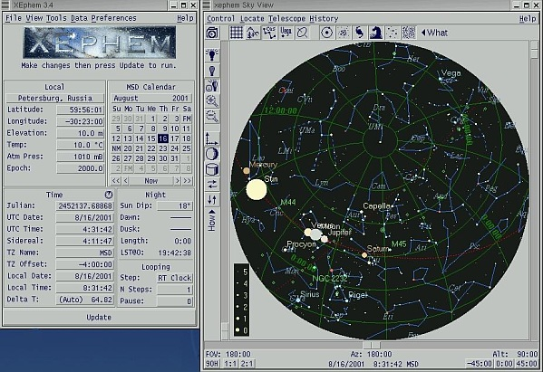
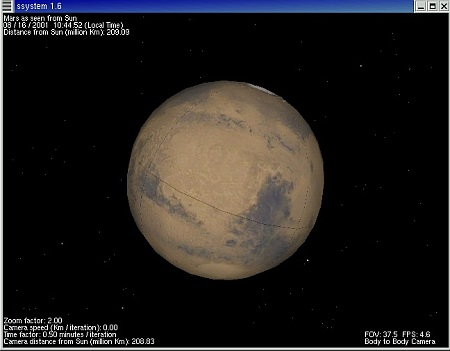
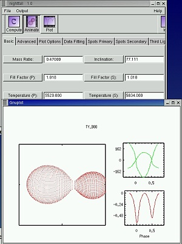
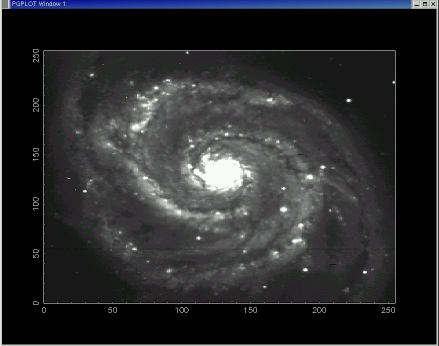
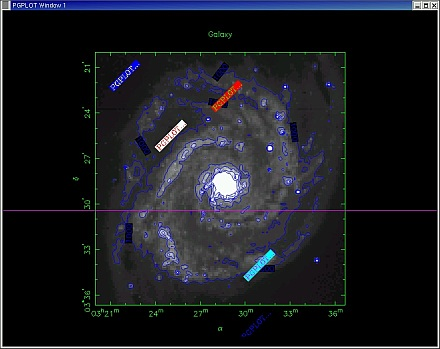
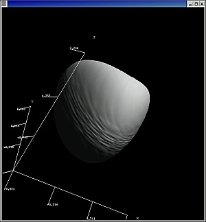
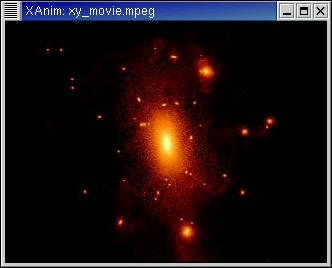
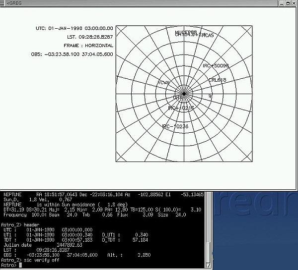
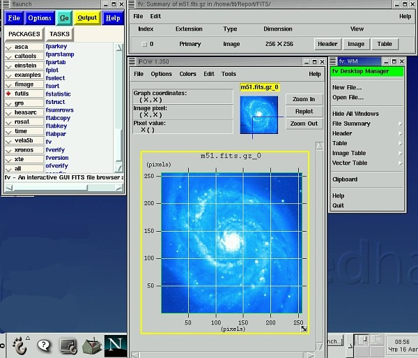

Астрономические приложения в Linux
Владимир Титов,
НИАИ Санкт-Петербургского университета
Содержание
Почему
Linux?
Астрономия
в стандартных дистрибуциях Linux
Приложения
Учебные
программы и программы для любителей астрономии:
XEphem
SSystem
Nigtfall
Средства
разработки и библиотеки
LibAstronomy
Astrophysics
Source Code Library
cfitsio
и CFITSIO
pgplot
и PGPLOT
PDL
StarSplatter
Профессиональные
системы
AIPS
DS9
ECLIPSE
MIDAS
GILDAS
HEASOFT
IRAF
NEMO
STARLAB
STARLINK
Заключение
- Во-первых, Linux — открытая система, то есть система,
удовлетворяющая принятым стандартам при организации взаимодействия между
различными процессами;
- Во-вторых, Linux — самая доступная система, в которой реализованы
практически все профессиональные астрономические приложения;
- В-третьих, Linux — свободно-распространяемая система.
- AstronomyHOWTO
Элвуда Дауни и Джона Хаггинса — часть документации Linux HOWTO (русский
перевод);
- Замечательная программа XEphem — планетарий с возможностью управления
телескопом входит в дистрибуцию RedHat;
- Программу SolarSystem можно найти в дистрибуции Debian;
- Несколько раз выпускались CD "Linux для астрономов"
(последнее издание на двух CD, т.5 и т.6), где собрано множество
профессиональных астрономических приложений, астрономических данных и средств
разработки.
- Здесь уместно упомянуть и сетевые ресурсы, связанные с астрономическим
программным обеспечением и Linux, такие как конференция linuxastro и сайт "Астрономия
на sourceforge.net"
Сюда прежде всего входят планетарии, звездные карты, и программы, помогающие
найти на небе тот или иной объект наблюдения.
Среди вполне проффесиональных
программ, таких как skychart, gstar, xsky, xplns, hitchhiker, безусловным
лидером является детище Элвуда Дауни XEphem.
XEphem

XEphem может делать все,
что делают аналогичные программы в Windows или Macintosh, и делает это
великолепно, но кроме того, может управлять телескопом Meade LX200
(продается в России!) и другими. Купив такой телескоп на несколько десятков
школ, можно (в каждой школе!) организовать удаленные наблюдения астрономических
объектов.
SSystem

Solar System (Рауль Алонсо) —
пример другого подхода — позволяет взглянуть на поверхность планет
Солнечной системы, некоторых спутников и астероидов с разных точек, при этом
положения планет вычисляются достаточно точно.
Nightfall

С помощью этой
"игрушки" Райнера Вихмана можно получить
- анимационные изображения затменных двойных звезд;
- кривые блеска и лучевых скоростей;
- наилучшие параметры двойной звезды для заданного ряда наблюдений.
Nightfall
позволяет задавать большой диапазон различных конфигураций, в том числе
эксцентрические орбиты, асинхронные вращения, возможное присутствие в системе
третьей звезды и многое другое.
LibAstronomy Есть чисто
вспомогательные библиотеки, обеспечивающие ряд функций, используемых в
астрономических программах: преобразования различных координат (эллиптические,
экваториальные, горизонтальные), преобразование времени, принадлежность
созвездию, некоторые математические функции. Такова, например, библиотека libAstronomy Александра
Роултера.
Astrophysics Source Code Library
Нас больше интересуют профессиональные библиотеки. Собственно в каждом
проекте либо создается своя собственная библиотека, либо/и используется
существующая. Но начать этот краткий обзор я хочу с библиотеки (или архива)
исходных кодов Астрофизики (Astrophysics Source Code
Library), где собраны в исходных кодах около полусотни различных пакетов,
реально применяющихся или применявшихся при проведении самых различных
астрономических исследований.
cfitsio и CFITSIO

Из
классических библиотек (к функция которых можно обращаться из пользовательских
программ на C, Fortran) следует упомянуть библиотеку Уильяма Пенса cfitsio,
которая позволяет работать (читать, редактировать, изменять) с FITS-файлами.
Отметим, что существует также модуль CFITSIO.pm, который
предоставляет Perl-интерфейс к библиотеке cfitsio.
pgplot и PGPLOT

Pgplot — графическая
библиотека Тима Пирсона широко используется в профессиональных астрономических
приложениях (кстати и свое начало берет тоже в астрономии), позволяет легко
создавать научные графики высокого качества. Так же, как и в случает библиотеки
cfitsio, имеется Perl-интерфейс (модуль PGPLOT.pm).
PDL

PDL — Perl-овский вариант, в свое время
широко используемого для обработки астрономических данных языка IDL.
StarSplatter

StarSplatter —
средство для создания изображений и анимаций по данным, полученным
моделированием астрофизических частиц. Выше приведен один из результатов —
ссылка на анимацию.
AIPS —
NRAO Astronomical Image Processing System — пакет для
интерактивной калибровки, конструирования, вывода и анализа астрономических
изображений, полученных по данным с помощью Фурье преобразований. С 1978 года на
его разработку затрачено 70 человеко-лет (сейчас 4 полных программиста и
несколько частей).
DS9 — приложение для визуализации астрономических изображений и данных
и их анализа.
ECLIPSE — библиотека обработки астрономических данных: чтение-запись
FITS-файлов, обработка изображений, трехмерная фильтрация, компьютерная
фотометрия, статистика и т.д. Все функции доступны и как Unix-команды.
MIDAS — Munich Image Data Analisys System, обработка изображений и данных
(в том числе для инстурментов в La Silla и VLT в Paranal). Кроме того, включает
пакеты для звездной фотометрии, разложения изображения, статистику и другие.
GILDAS — Grenoble Image and Line Data Analysis Software — коллекция
программ, ориентированных на радиоастрономические приложения. Как и Midas
используется для конкретных инструментов.

HEASOFT — продукт High Energy Astrophysics Science Archive Research Center
(Goddart Space Flight Center) — интегрированная система, состоящая из
FTOOLS (анализ FITS-файлов, как для конкретных проектов ASCA, ROSAT, XTE, так и
общего назначения CALDB и т.д.); XANADU (XSPEC, XRONOS, XIMAGE) анализ
рентгеновских данных, полученных в различных проектах; XSTAR (вычисление
физических условий и спектров излучения фотоионизированного газа).

IRAF — Image
Reduction ∧ Analysis Facility, — система для обработки и анализа
астрономических данных (NOAO). Данные в основном оптические и инфракрасные.
NEMO, STARLAB —
инструмент исследования звездной динамики, позволяет создавать, интегрировать и
анализировать системы N тел. STARLAB только деталями отличается от Nemo.
STARLINK — собрание астрономических пакетов, библиотек, утилит. В настоящее
время содержит около 140 различных приложений, покрывающих почти все
астрономические разделы.
Практически все приведенные приложения (учебные, средства разработки,
профессиональные) используют в своих работах сотрудниками Астрономического Института
Санкт-Петербургского государственного института, разрабатываются и собственные
астрономические приложения в Linux.
- Чтобы идти в ногу со всем астрономическим сообществом, при создании
программного обеспечения своих исследований необходимо работать в "открытой
системе" (Linux, Solaris, Irix, BSD или что-то еще — не так важно);
- При разработке ПО использовать современные средства разработки
("современные" — относится прежде всего к средствам управления и
визуализации) с лицензией, дающей право делиться разработанными продуктами с
коллегами. К таким средствам можно отнести Perl, Python, PDL, Gtk, Tcl/Tk,
Orbit и т. д.
- Учить студентов-астрономов программированию именно в "открытых
системах".